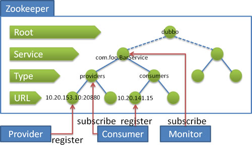

Zookeeper Registry Server
Zookeeper is the child project of apache hadoop. Since it offers tree-like directory service and supports change notification, it's suitable to use it as dubbo's registry server. It's a field-proven product, therefore it's recommended to use it in the production environment. [^1]

Description on registration procedure:
- When service provider boots up: write service URL address under directory
/dubbo/com.foo.BarService/providers - When service consumer boots up: subscribe to
/dubbo/com.foo.BarService/providersfor provider's URL addresses. At the same time, write consumer's URL address under/dubbo/com.foo.BarService/consumers. - When monitor center boots up: subscribe to
/dubbo/com.foo.BarServicefor the URL addresses from all providers and consumers.
The following abilities are supported:
* When provider stops by accident, registry server can remove its info automatically.
* When registry server reboots, all registration data and subscription requests can be recovered automatically.
* When session is expired, all registration data and subscription requests can be recovered automatically.
* When <dubbo:registry check="false" /> is configured, failed requests for subscription and registration will be recorded and kept retrying in the background.
* Configure <dubbo:registry username="admin" password="1234" /> for zookeeper login.
* Configure <dubbo:registry group="dubbo" /> for dubbo's root node on zookeeper. Default root node will be used if it's not specified.
* Support to use wildcard * in <dubbo:reference group="*" version="*" /> in order to subscribe all groups and all versions for the services to be referenced.
How to Use
Add zookeeper client dependency in both provider and consumer:
<dependency>
<groupId>org.apache.zookeeper</groupId>
<artifactId>zookeeper</artifactId>
<version>3.3.3</version>
</dependency>
Or download directly from apache.
Dubbo supports two zookeeper clients: zkclient and curator:
Use zkclient
Since 2.2.0 dubbo uses zkclient by default, in order to improve the robustness. zkclient is a zookeeper client implementation open-sourced by Datameer.
Note: The implementation of zkclient has been removed in the 2.7.x version. If you want to use the zkclient client, you need to extend it yourself.
Default configuration:
<dubbo:registry ... client="zkclient" />
Or:
dubbo.registry.client=zkclient
Or:
zookeeper://10.20.153.10:2181?client=zkclient
In order to use it, need to explicitly declare the following maven dependency or download its client.
<dependency>
<groupId>com.github.sgroschupf</groupId>
<artifactId>zkclient</artifactId>
<version>0.1</version>
</dependency>
Use curator
Since 2.3.0 dubbo also supports curator but explicit configuration is required. Curator is the zookeeper client open-sourced by Netflix.
In order to switch to curator, use the configuration below:
<dubbo:registry ... client="curator" />
Or:
dubbo.registry.client=curator
Or:
zookeeper://10.20.153.10:2181?client=curator
Also need to explicitly add maven dependency or directly download the jar:
<dependency>
<groupId>com.netflix.curator</groupId>
<artifactId>curator-framework</artifactId>
<version>1.1.10</version>
</dependency>
Zookeeper single node configuration:
<dubbo:registry address="zookeeper://10.20.153.10:2181" />
Or:
<dubbo:registry protocol="zookeeper" address="10.20.153.10:2181" />
Zookeeper cluster configuration：
<dubbo:registry address="zookeeper://10.20.153.10:2181?backup=10.20.153.11:2181,10.20.153.12:2181" />
Or:
<dubbo:registry protocol="zookeeper" address="10.20.153.10:2181,10.20.153.11:2181,10.20.153.12:2181" />
Configure single zookeeper to serve as multiple registry servers:
<dubbo:registry id="chinaRegistry" protocol="zookeeper" address="10.20.153.10:2181" group="china" />
<dubbo:registry id="intlRegistry" protocol="zookeeper" address="10.20.153.10:2181" group="intl" />
Zookeeper Installation
Pls. refer to zookeeper install manual for how to install zookeeper based registry server. To set it up, specify dubbo.registry.address to zookeeper://127.0.0.1:2181 in conf/dubbo.properties for both provider and consumer (you can refer to quick start) after install a zookeeper server.
Declaration of Reliability
A home-brewed service registry server is used in Alibaba instead of zookeeper server. Zookeeper based registry center does not have long-run practice within Alibaba, therefore we cannot guarantee its reliability. Zookeeper registry server is provided for dubbo community, and its reliability relies on zookeeper itself largely.
Declaration of Compatibility
The original designed data structure for zookeeper in 2.0.8 has the limitation that data type cannot extended, it's redesigned in 2.0.9. But at the same time incompatibility is introduced, thereby 2.0.9 is required for all service providers and service consumers.
Since 2.2.0 zkclient is used by default, therefore its dependency is needed.
Since 2.3.0 curator is supported as alternative option.
[^1]: Suggest to use 2.3.3 or above for zookeeper registry client